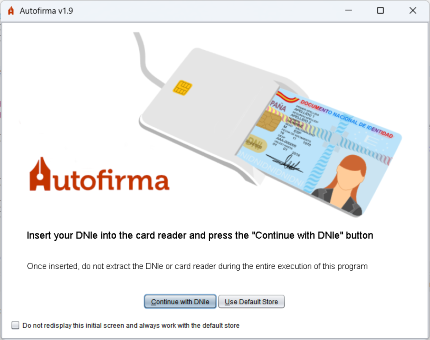

This screen will only appear if a smart card reader installed and configured in the system has been detected. Here the program is waiting for the user to insert their electronic ID into the reader or to indicate that they do not want to use the ID.

The user can insert his/her DNIe into the reader and press the "Continue with DNIe" button to advance signing with his/her DNIe signature certificate (DNIe drivers do not need to be installed) or press the "Use Any Certificate" button or the Escape key if you want to use any imported certificate on your operating system.
Once an option is selected, you will be shown the signature screen.